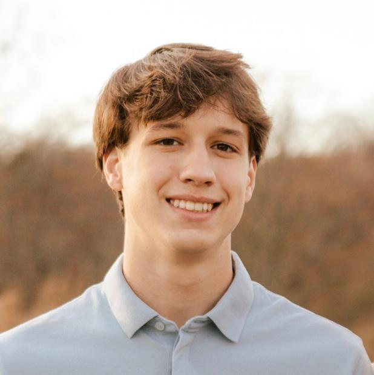

01 · PCB & Circuits
High-speed layout, stackups and via structures, controlled impedance, signal paths, power and analog/digital circuit integration.
Hardware-focused computer systems engineering, rooted in a curiosity about how computers work at the component and circuit level.

I've always been interested in computers, especially the hardware and components that make them work.
I'm studying Computer Systems Engineering at the University of Georgia and enjoy PCB design, FPGA development, and the programming that brings hardware to life.
High-speed layout, stackups and via structures, controlled impedance, signal paths, power and analog/digital circuit integration.
Verilog, processors, timing, simulation, clock-domain crossing, external memory and hardware interface control.
Microcontrollers, sensors, robotic systems, Python/C control and lab-based debug across hardware and software.
B.S., Computer Systems Engineering
Expected May 2027 · GPA 3.80/4.00
Academic work in computer architecture, advanced digital design, embedded systems, electronics, circuit analysis, sensing, linear systems and systems programming.
I also participate in IEEE's Micromouse PCB competition team and the UGA Robotics Club's BattleBots competition team. Those experiences combine collaborative engineering with the challenge of designing for real physical systems.